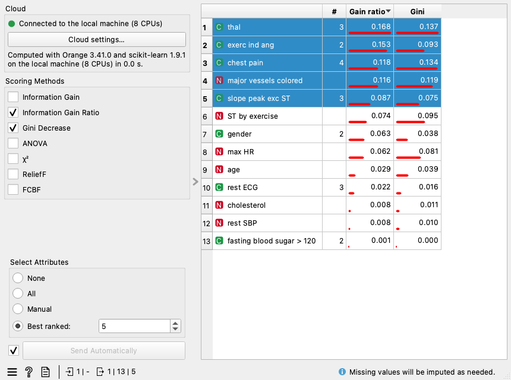

Ranks the features of a cloud table by their relevance, with Orange's scoring methods computed on all rows on the machine, and keeps the best ones.

Like every Cloud widget, it has a Cloud box at the top: whether a machine is connected, Cloud settings…, and what the last job ran with, how long it took and what it cost. See Cloud widgets.
It works like Orange's Rank. Check the scoring methods: Information Gain, Gain Ratio, Gini, ANOVA, χ², ReliefF and FCBF for a categorical target, Univariate Regression and RReliefF for a numeric one. The machine computes them with Orange's own code on all rows, so the scores are those of Orange's Rank on the whole table. Checking another method computes only that one.
Sort the table by any score, and choose the features to keep: None, All, Manual (select rows in the table) or the Best ranked N.
Orange's own Rank can't score a cloud table: it sees only the placeholder row. With most of its methods it stops with an error that points here; with the others it picks arbitrary features.
Scoring copies and discretizes the data: it needs up to about 12 times the memory of the features and the target. If the machine hasn't enough, the widget says so; choose a larger machine size in Cloud settings.